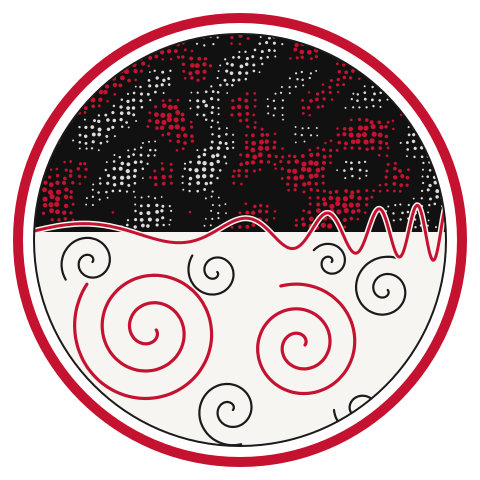
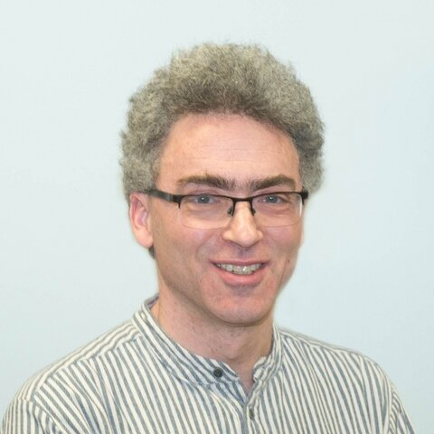
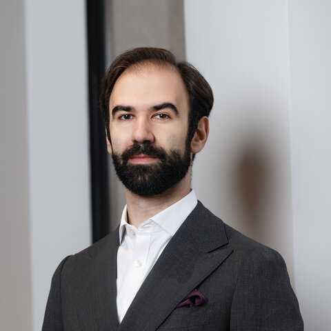
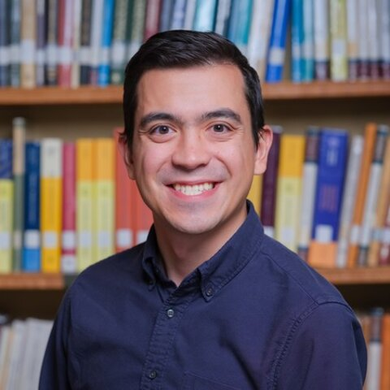
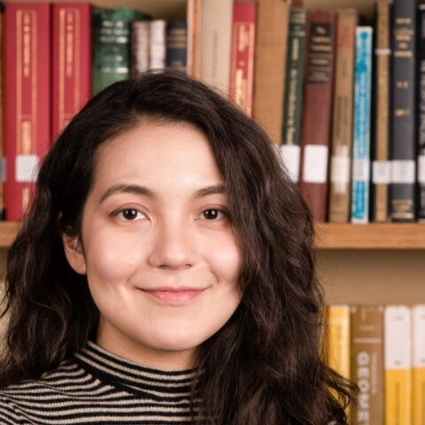

AI Methods for Turbulence
and Early-Universe Signals
A KAAI Workshop · Carnegie Mellon University


Overview
About the workshop
Turbulence appears across astrophysics and cosmology, from magnetized plasmas in galaxies and the interstellar medium to the primordial plasma of the early universe. Early-universe processes such as first-order phase transitions and primordial magnetic fields can drive turbulence, which may leave observable imprints in stochastic gravitational-wave backgrounds and in cosmic magnetic fields. Modeling these systems requires expensive simulations over a wide range of scales, and connecting them to data is a hard inverse problem. This workshop brings together researchers in turbulence, early-universe physics, and machine learning to discuss how AI methods can help with simulation, inference, and signal detection in this area.
- AI methods for turbulence: surrogate models, emulators, and learned representations of hydrodynamic and magnetohydrodynamic turbulence across scales.
- Early-universe signals: modeling and inference of signatures of early-universe physics, including gravitational-wave backgrounds and primordial magnetic fields.
This is a Keystone Astronomy & AI (KAAI) Fellows Program workshop, sponsored by the Simons Foundation Targeted Grant to Institutes.
Registration
Registration & online participation
Registration is closed. All sessions can be joined online via Zoom.
Join on ZoomMeeting ID: 927 0071 7097
Questions? Email mgurgeni@andrew.cmu.edu.
Location
Location & Directions
All workshop meetings will be held in Wean Hall 8330, Carnegie Mellon University.
Wean Hall
Carnegie Mellon University
5000 Forbes Avenue
Pittsburgh, PA 15213
Directions to Room 8330
- Enter Wean Hall through the main entrance on the 5th floor (view entrance location on Google Maps).
- Take the main elevators or central stairs up to the 8th floor.
- Follow the hallway signs to Room 8330 (Department of Physics / McWilliams Center).
Schedule
Schedule
Tentative schedule, subject to change. All times Eastern (EST).
Monday, November 2
| 9:30 – 10:00 am | Welcome and introductions | |
| 10:00 – 10:45 am | TalkTurbulence production of gravitational waves in the early Universe | Alberto Roper Pol |
| 10:45 – 11:15 am | Coffee break | |
| 11:15 am – 12:00 pm | TalkEnergy Dissipation in Gravitational Wave Sources | Arthur Kosowsky |
| 12:00 – 1:00 pm | Lunch | |
| 1:00 – 1:45 pm | TalkWhat Can We Learn from Pulsar Timing Arrays When AI Is on Board? | Tina Kahniashvili |
| 1:45 – 2:30 pm | Introduction of the proposed projects for turbulence | |
| 2:30 – 3:15 pm | Open discussion about projects | |
| 3:15 – 4:00 pm | TalkMurman Gurgenidze | |
| 4:00 – 4:30 pm | Coffee break | |
| 4:30 – 6:00 pm | Free time to discuss / work on collaborative projects | |
Tuesday, November 3
| 9:30 – 10:15 am | TalkCosmoAgent: AI Agent for Theoretical Cosmology | Wenrong Sun |
| 10:15 – 10:45 am | Crash course on numerical simulations / hands-on Pencil Code | |
| 10:45 – 11:15 am | Coffee break | |
| 11:15 am – 12:00 pm | Crash course on numerical simulations / hands-on Pencil Code | |
| 12:00 – 1:00 pm | Lunch | |
| 1:00 – 1:45 pm | Crash course on numerical simulations / hands-on Pencil Code | |
| 1:45 – 4:00 pm | Project proposal with Pencil Code / description of hackathon project | |
| 4:00 – 4:30 pm | Coffee break | |
| 4:30 – 5:15 pm | Ethical concerns about use of AI | |
| 5:15 – 6:00 pm | Free time to discuss / work on collaborative projects | |
Wednesday, November 4
| 9:30 – 10:00 am | TalkIn-the-loop ML for LES and other applications | Touko Puro / Shreyas Giridhar (online) |
| 10:00 – 10:45 am | TalkSimulations of first-order phase transitions | Isak Stomberg (online) |
| 10:45 – 11:15 am | Coffee break | |
| 11:15 am – 12:00 pm | TalkGW detection prospects via astrometry | Deyan Mihaylov |
| 12:00 – 1:00 pm | Lunch | |
| 1:00 – 1:45 pm | TalkPractical Scientific Constraints with Simulation-Based Inference | Matthew Ho |
| 1:45 – 4:00 pm | Free time to discuss / work on collaborative projects / hackathon projects / spontaneous talks | |
| 4:00 – 4:30 pm | Coffee break | |
| 4:30 – 6:00 pm | Free time to discuss / work on collaborative projects | |
Thursday, November 5
| 9:30 – 10:00 am | TalkChris | |
| 10:00 – 10:30 am | TalkJames Wedgwood | |
| 10:45 – 11:15 am | Coffee break | |
| 11:15 am – 12:00 pm | TalkMuni Zhou | |
| 12:00 – 1:00 pm | Lunch | |
| 1:00 – 4:00 pm | Free time to discuss / work on collaborative projects / hackathon projects / spontaneous talks | |
| 4:00 – 4:30 pm | Coffee break | |
| 4:30 – 5:15 pm | Open discussion about the future of science with AI | |
| 5:15 – 6:00 pm | Free time to discuss / work on collaborative projects | |
Friday, November 6
| 9:30 – 10:45 am | Hackathon | |
| 10:45 – 11:15 am | Coffee break | |
| 11:15 am – 12:00 pm | Hackathon | |
| 12:00 – 1:00 pm | Lunch | |
| 1:00 – 4:00 pm | Hackathon | |
| 4:00 – 4:30 pm | Coffee break | |
| 4:30 – 6:00 pm | Closing / hackathon winners | |
Speakers
Invited speakers

Arthur Kosowsky
Professor · University of Pittsburgh
Isak Stomberg
Postdoctoral Researcher · IFIC (CSIC–Universitat de València)

Deyan Mihaylov
NASA ADP Postdoctoral Fellow · Case Western Reserve University

Matthew Ho
Member · Institute for Advanced Study

Muni Zhou
Assistant Professor · Dartmouth College
Wenrong Sun
Brown University · Brown Center for Theoretical Physics and Innovation
Committee
Organizing committee
Tina Kahniashvili
Carnegie Mellon University, Department of Physics
Carnegie Mellon University, Machine Learning Department
Alberto Roper Pol
University of Geneva, Department of Theoretical Physics
Murman Gurgenidze
Carnegie Mellon University, Department of Physics